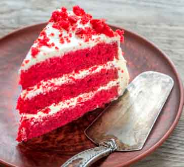

| Harina de Repostería | 300 g |
| Huevo | 2 |
| Azúcar | 290 g |
| Aceite de Oliva | 110 ml |
| Extracto de Vainilla | 2 ml |
| Cacao en Polvo | 2 g |
| Leche | 250 ml |
| Zumo de Limón | 2 ml |
| Bicarbonato Sódico | 1 g |
| Colorante Alimentario Rojo | 10 g |
Comenzaremos haciendo el bizcocho. Para ello añadimos el limón a la leche para conseguir una buttermilk casera. Dejamos reposar esta mezcla durante 10 minutos mientras seguimos con la receta. En un bol o vaso de una batidora, batimos los dos huevos con el azúcar hasta que blanqueen. Añadimos el aceite de oliva y el extracto de vainilla. Batimos hasta que se integren los ingredientes.
Es el turno de los ingredientes secos. Tamizar la harina junto con el cacao. Una vez tamizado, lo añadimos al bol y mezclamos todo con la batidora a velocidad mínima, pero solo hasta que veamos los ingredientes integrados. Añadimos entonces la buttermilk a la mezcla batiendo de forma suave. Precalentamos el horno a 170 ºC.
Añadimos rápidamente el bicarbonato a la masa y vigilamos que quede bien repartido por ella. Para conseguir ese rojo intenso utilizamos colorante alimentario en gel, lo añadimos a la mezcla y lo repartimos homogéneamente. Repartimos la masa en tres moldes, engrasados con mantequilla o spray desmoldante, y de preferencia que sean moldes desmontables.
Repartimos la masa por igual en los tres moldes y llevamos al horno precalentadolos a 170 ºC. Debe de estar el horno precalentado con anterioridad pues las masas que llevan bicarbonato no pueden reposar. Horneamos durante 20 minutos o hasta que al pincharlo con una aguja esta salga limpia.
Recién salidos del horno los dejamos reposar en una rejilla durante 10 minutos. Los desmoldamos pasado ese tiempo y les rebanamos la parte superior con un cuchillo de sierra. Dejamos que los bizcochos ya lisos enfríen por completo en la rejilla y decoramos al gusto.
¡Y YA TENEMOS LISTA NUESTRA DELICIOSA RED VELVET PARA SORPRENDER A TODOS NUESTROS INVITADOS!